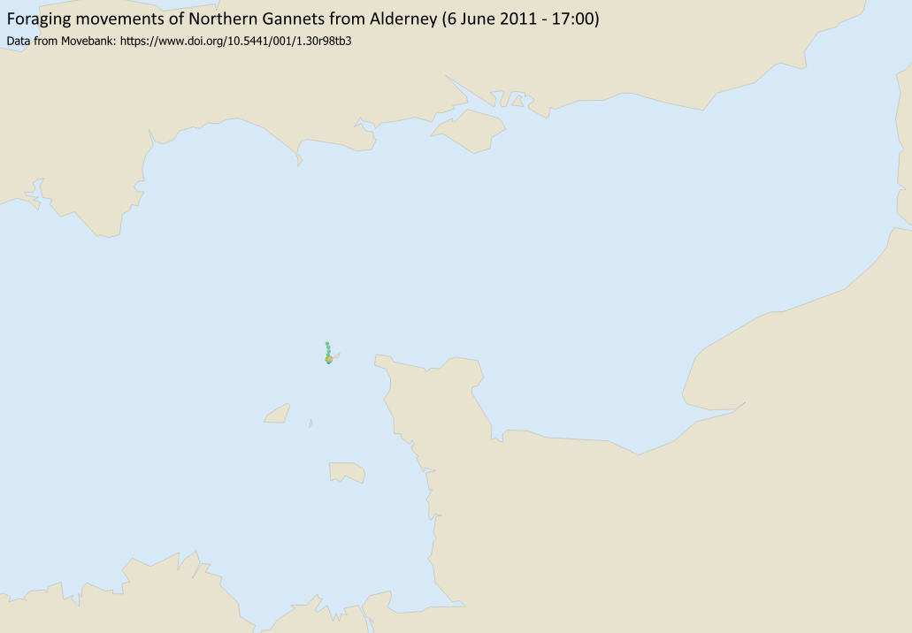

Creating an animated gif from multiple frames.

timestamp.Temporal tab on left.
Configuration as Single Field with Date/Time.Limits = Include start, Exclude End (default)Field correctly - to timestamp for this data.Event duration as required. You can always change this later!Accumulate features over time - can get very messy if you have a lot of points!Apply and OK.View > Panels > Temporal Controller or click the button on the toolbar.Animated temporal animation.This should give you some more controls. The Animation range should be set by default. Try clicking on the Play button and see what happens.
Step setting, e.g. to 1 hour or 1 day, depending on the time period of your data, or how quickly it changes. For the Alderney Gannets, 30 minutes worked best.save button next to Step.
Extent - don’t make it too large!Save and wait for the images to be generated.You should end up with multiple images in a single folder. You now need to use GIMP for the next stages.
Used GIMP to create an animated GIF.
File > New then enter correct size (refer to pixel size of images) and orientation. Set resolution under Advanced - don’t make it too high! 95 dpi should be fine.Image > Mode > Indexed. Stick to defaults for now!File > Export As - give file name .gif extension then click Export.As animation and choose options.
GIF comment:, unless you want to add a comment of your own…Frame disposal should be set to One frame per layer (replace)Use delay entered above for all frames and Use disposal entered above for all frames.Delay as required to change speed of animation.Export to export the animated gif.Delay as required to speed up or slow down your animation.